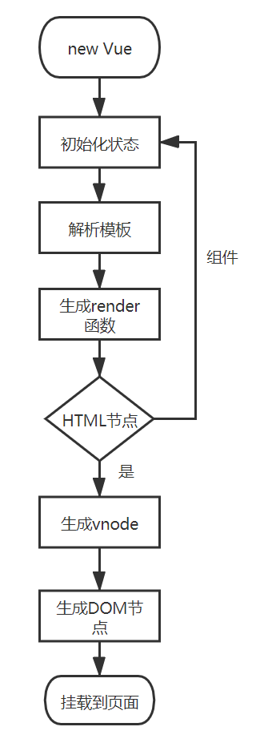

之前文章有写到vue构造函数的实例化过程，只是对vue实例做了个粗略的描述，并没有说明vue组件实例化的过程。本文主要对vue组件的实例化过程做一些简要的描述。
组件的实例化与vue构造函数的实例化，大部分是类似的，vue的实例可以当做一个根组件，普通组件的实例化可以当做子组件。真实的DOM是一个树形结构，虚拟DOM本质只是真实DOM的抽象，也是一个树形结构。简单来说，整个vue工程的实例化过程如下：

如上图所示，在调用render函数时，会依次调用createElement方法，createElement方法的代码如下，主要作用就是生成vnode。
export function _createElement (
context: Component,
tag?: string | Class<Component> | Function | Object,
data?: VNodeData,
children?: any,
normalizationType?: number
): VNode | Array<VNode> {
if (isDef(data) && isDef((data: any).__ob__)) {
process.env.NODE_ENV !== 'production' && warn(
`Avoid using observed data object as vnode data: ${JSON.stringify(data)}\n` +
'Always create fresh vnode data objects in each render!',
context
)
return createEmptyVNode()
}
// object syntax in v-bind
if (isDef(data) && isDef(data.is)) {
tag = data.is
}
if (!tag) {
// in case of component :is set to falsy value
return createEmptyVNode()
}
// warn against non-primitive key
if (process.env.NODE_ENV !== 'production' &&
isDef(data) && isDef(data.key) && !isPrimitive(data.key)
) {
if (!__WEEX__ || !('@binding' in data.key)) {
warn(
'Avoid using non-primitive value as key, ' +
'use string/number value instead.',
context
)
}
}
// support single function children as default scoped slot
if (Array.isArray(children) &&
typeof children[0] === 'function'
) {
data = data || {}
data.scopedSlots = { default: children[0] }
children.length = 0
}
// 组件格式化
if (normalizationType === ALWAYS_NORMALIZE) {
children = normalizeChildren(children)
} else if (normalizationType === SIMPLE_NORMALIZE) {
children = simpleNormalizeChildren(children)
}
let vnode, ns
if (typeof tag === 'string') {
let Ctor
ns = (context.$vnode && context.$vnode.ns) || config.getTagNamespace(tag)
// 普通的HTML标签
if (config.isReservedTag(tag)) {
// platform built-in elements
if (process.env.NODE_ENV !== 'production' && isDef(data) && isDef(data.nativeOn)) {
warn(
`The .native modifier for v-on is only valid on components but it was used on <${tag}>.`,
context
)
}
// 创建一个普通的DOM节点
vnode = new VNode(
config.parsePlatformTagName(tag), data, children,
undefined, undefined, context
)
} else if ((!data || !data.pre) && isDef(Ctor = resolveAsset(context.$options, 'components', tag))) {
// component
// 创建组件
vnode = createComponent(Ctor, data, context, children, tag)
} else {
// unknown or unlisted namespaced elements
// check at runtime because it may get assigned a namespace when its
// parent normalizes children
vnode = new VNode(
tag, data, children,
undefined, undefined, context
)
}
} else {
// direct component options / constructor
vnode = createComponent(tag, data, context, children)
}
if (Array.isArray(vnode)) {
return vnode
} else if (isDef(vnode)) {
if (isDef(ns)) applyNS(vnode, ns)
if (isDef(data)) registerDeepBindings(data)
return vnode
} else {
return createEmptyVNode()
}
}如上图所示，主流程与实例化Vue类似，只是在实例化Vue的过程中，额外走了一个创建组件的分支，其中createComponent方法实现如下：
export function createComponent (
Ctor: Class<Component> | Function | Object | void,
data: ?VNodeData,
context: Component,
children: ?Array<VNode>,
tag?: string
): VNode | Array<VNode> | void {
if (isUndef(Ctor)) {
return
}
// 获取Vue基础构造函数，在initGlobal中，将vue基础构造方法赋值给_base属性
const baseCtor = context.$options._base
// plain options object: turn it into a constructor
if (isObject(Ctor)) {
// 将组件的配置，合并到构造方法中，extend是定义在Vue构造方法中的
Ctor = baseCtor.extend(Ctor)
}
// if at this stage it's not a constructor or an async component factory,
// reject.
if (typeof Ctor !== 'function') {
if (process.env.NODE_ENV !== 'production') {
warn(`Invalid Component definition: ${String(Ctor)}`, context)
}
return
}
// async component
let asyncFactory
if (isUndef(Ctor.cid)) {
asyncFactory = Ctor
Ctor = resolveAsyncComponent(asyncFactory, baseCtor)
if (Ctor === undefined) {
// return a placeholder node for async component, which is rendered
// as a comment node but preserves all the raw information for the node.
// the information will be used for async server-rendering and hydration.
return createAsyncPlaceholder(
asyncFactory,
data,
context,
children,
tag
)
}
}
data = data || {}
// resolve constructor options in case global mixins are applied after
// component constructor creation
resolveConstructorOptions(Ctor)
// transform component v-model data into props & events
if (isDef(data.model)) {
transformModel(Ctor.options, data)
}
// extract props
const propsData = extractPropsFromVNodeData(data, Ctor, tag)
// functional component
if (isTrue(Ctor.options.functional)) {
return createFunctionalComponent(Ctor, propsData, data, context, children)
}
// extract listeners, since these needs to be treated as
// child component listeners instead of DOM listeners
const listeners = data.on
// replace with listeners with .native modifier
// so it gets processed during parent component patch.
data.on = data.nativeOn
if (isTrue(Ctor.options.abstract)) {
// abstract components do not keep anything
// other than props & listeners & slot
// work around flow
const slot = data.slot
data = {}
if (slot) {
data.slot = slot
}
}
// install component management hooks onto the placeholder node
// 初始化组件的钩子函数
installComponentHooks(data)
// return a placeholder vnode
// 体现了组件名称在这里面的作用
const name = Ctor.options.name || tag
// 创建vnode
const vnode = new VNode(
`vue-component-${Ctor.cid}${name ? `-${name}` : ''}`,
data, undefined, undefined, undefined, context,
{ Ctor, propsData, listeners, tag, children },
asyncFactory
)
// Weex specific: invoke recycle-list optimized @render function for
// extracting cell-slot template.
// https://github.com/Hanks10100/weex-native-directive/tree/master/component
/* istanbul ignore if */
if (__WEEX__ && isRecyclableComponent(vnode)) {
return renderRecyclableComponentTemplate(vnode)
}
return vnode
}从上述代码中可以看出，createComponent主要作用就是返回一个vnode，中间的流程主要作用有两点，一是组装组件的构造方法，用于实例化组件，另外一点就是调用installComponentHooks，初始化组件的生命周期入口。组件的声明周期钩子虽然与vue根实例一致，但是调用的位置还是有一定的差别，具体有以下几点：
1. Vue构造方法是在src\core\instance\index.js中，而组件的构造方法是基于Vue根构造方法，在上述createComponet中调用Vue.extend方法进行组装而成，本质上都是调用Vue实例上的_init方法，但是组件的构造方法VueComponent声明了一些属于自己的自定义属性，具体实现代码如下：
Vue.extend = function (extendOptions: Object): Function {
extendOptions = extendOptions || {}
const Super = this
// 父级实例cid
const SuperId = Super.cid
const cachedCtors = extendOptions._Ctor || (extendOptions._Ctor = {})
if (cachedCtors[SuperId]) {
return cachedCtors[SuperId]
}
const name = extendOptions.name || Super.options.name
if (process.env.NODE_ENV !== 'production' && name) {
validateComponentName(name)
}
// 定义vue初始化方法，和实例化Vue走同一个路线
const Sub = function VueComponent (options) {
this._init(options)
}
// super -> this -> Vue 继承Vue构造方法中的属性
Sub.prototype = Object.create(Super.prototype)
// 指定子组件的构造方法为Sub -> VueComponent
Sub.prototype.constructor = Sub
Sub.cid = cid++
// 合并组件属性
Sub.options = mergeOptions(
Super.options,
extendOptions
)
// 定义父级作用域
Sub['super'] = Super
// For props and computed properties, we define the proxy getters on
// the Vue instances at extension time, on the extended prototype. This
// avoids Object.defineProperty calls for each instance created.
if (Sub.options.props) {
initProps(Sub)
}
if (Sub.options.computed) {
initComputed(Sub)
}
// allow further extension/mixin/plugin usage
// 子组件的实例，保持对vue构造方法的引用
Sub.extend = Super.extend
Sub.mixin = Super.mixin
Sub.use = Super.use
// create asset registers, so extended classes
// can have their private assets too.
ASSET_TYPES.forEach(function (type) {
Sub[type] = Super[type]
})
// enable recursive self-lookup
if (name) {
Sub.options.components[name] = Sub
}
// keep a reference to the super options at extension time.
// later at instantiation we can check if Super's options have
// been updated.
Sub.superOptions = Super.options
Sub.extendOptions = extendOptions
Sub.sealedOptions = extend({}, Sub.options)
// cache constructor
cachedCtors[SuperId] = Sub
return Sub
}
}2. Vue根实例的模板解析与DOM挂载入口不一致，在_init方法中，提供了对根实例的模板解析与DOM挂载，而组件没有。在创建组件时，调用了installComponentHooks，componet hooks主要包含init、prepatch、insert、destory，init在实例化组件时调用，insert是插入DOM时调用，destory是在销毁组件时调用，而prepatch是在更新组件时调用，具体如下：
const componentVNodeHooks = {
// 组件初始化方法
init (vnode: VNodeWithData, hydrating: boolean): ?boolean {
if (
vnode.componentInstance &&
!vnode.componentInstance._isDestroyed &&
vnode.data.keepAlive
) {
// kept-alive components, treat as a patch
const mountedNode: any = vnode // work around flow
componentVNodeHooks.prepatch(mountedNode, mountedNode)
} else {
// 实例化组件
const child = vnode.componentInstance = createComponentInstanceForVnode(
vnode,
activeInstance
)
//挂载组件
child.$mount(hydrating ? vnode.elm : undefined, hydrating)
}
},
prepatch (oldVnode: MountedComponentVNode, vnode: MountedComponentVNode) {
const options = vnode.componentOptions
const child = vnode.componentInstance = oldVnode.componentInstance
updateChildComponent(
child,
options.propsData, // updated props
options.listeners, // updated listeners
vnode, // new parent vnode
options.children // new children
)
},
insert (vnode: MountedComponentVNode) {
const { context, componentInstance } = vnode
if (!componentInstance._isMounted) {
componentInstance._isMounted = true
callHook(componentInstance, 'mounted')
}
if (vnode.data.keepAlive) {
if (context._isMounted) {
// vue-router#1212
// During updates, a kept-alive component's child components may
// change, so directly walking the tree here may call activated hooks
// on incorrect children. Instead we push them into a queue which will
// be processed after the whole patch process ended.
queueActivatedComponent(componentInstance)
} else {
activateChildComponent(componentInstance, true /* direct */)
}
}
},
destroy (vnode: MountedComponentVNode) {
const { componentInstance } = vnode
if (!componentInstance._isDestroyed) {
if (!vnode.data.keepAlive) {
componentInstance.$destroy()
} else {
deactivateChildComponent(componentInstance, true /* direct */)
}
}
}
}如上述代码所示，实例化组件调用的是createComponentInstanceForVnode,createComponentInstanceForVnode代码如下，调用在Vue.extend中组装的组件构造方法VueComponent，初始化调用的还是Vue原型上的_init方法，大致流程与Vue初始化类似，只是解析模板有所区别，组件解析模板调用的是child.$mount。
// 创建组件的作用域，执行组件的_init方法，同vue实例化过程
export function createComponentInstanceForVnode (
vnode: any, // we know it's MountedComponentVNode but flow doesn't
parent: any, // activeInstance in lifecycle state
): Component {
const options: InternalComponentOptions = {
_isComponent: true,
_parentVnode: vnode,
parent
}
// check inline-template render functions
const inlineTemplate = vnode.data.inlineTemplate
if (isDef(inlineTemplate)) {
options.render = inlineTemplate.render
options.staticRenderFns = inlineTemplate.staticRenderFns
}
// 实例化组件的构造方法
return new vnode.componentOptions.Ctor(options)
}在installComponentHooks中，在vnode的data属性中初始化了hooks,后面在_patch__中，会调用patch.js中声明的createComponent -> init -> 实例化组件。组件实例化完成后，会将真实DOM元素，插入到上一级元素。patch.js中的createComponent方法如下：
// 创建组件，如果节点类型是组件，则直接走创建组件的方法
function createComponent (vnode, insertedVnodeQueue, parentElm, refElm) {
let i = vnode.data
// 判断是否存在组件的生命周期，存在，即需要走创建组件的流程
if (isDef(i)) {
const isReactivated = isDef(vnode.componentInstance) && i.keepAlive
if (isDef(i = i.hook) && isDef(i = i.init)) {
// 执行component的init方法，获取组件的实例
i(vnode, false /* hydrating */)
}
// after calling the init hook, if the vnode is a child component
// it should've created a child instance and mounted it. the child
// component also has set the placeholder vnode's elm.
// in that case we can just return the element and be done.
// 组件的vnode对象中存在当前组件的作用域
if (isDef(vnode.componentInstance)) {
initComponent(vnode, insertedVnodeQueue)
// 将子组件插入到父节点中
insert(parentElm, vnode.elm, refElm)
if (isTrue(isReactivated)) {
reactivateComponent(vnode, insertedVnodeQueue, parentElm, refElm)
}
return true
}
}
}在实例化完成后，会将生成的真实DOM元素插入到上级元素中，vue在获取真实DOM时，是从低往上，一级级添加，最终将渲染的元素添加到DOM body中，__patch__主流程如下：
function patch (oldVnode, vnode, hydrating, removeOnly) {
if (isUndef(vnode)) {
if (isDef(oldVnode)) invokeDestroyHook(oldVnode)
return
}
let isInitialPatch = false
const insertedVnodeQueue = []
if (isUndef(oldVnode)) {
// empty mount (likely as component), create new root element
isInitialPatch = true
createElm(vnode, insertedVnodeQueue)
} else {
const isRealElement = isDef(oldVnode.nodeType)
if (!isRealElement && sameVnode(oldVnode, vnode)) {
// patch existing root node
patchVnode(oldVnode, vnode, insertedVnodeQueue, null, null, removeOnly)
} else {
if (isRealElement) {
// mounting to a real element
// check if this is server-rendered content and if we can perform
// a successful hydration.
// nodeType 1 元素 3 文字
if (oldVnode.nodeType === 1 && oldVnode.hasAttribute(SSR_ATTR)) {
oldVnode.removeAttribute(SSR_ATTR)
hydrating = true
}
if (isTrue(hydrating)) {
if (hydrate(oldVnode, vnode, insertedVnodeQueue)) {
invokeInsertHook(vnode, insertedVnodeQueue, true)
return oldVnode
} else if (process.env.NODE_ENV !== 'production') {
warn(
'The client-side rendered virtual DOM tree is not matching ' +
'server-rendered content. This is likely caused by incorrect ' +
'HTML markup, for example nesting block-level elements inside ' +
'<p>, or missing <tbody>. Bailing hydration and performing ' +
'full client-side render.'
)
}
}
// either not server-rendered, or hydration failed.
// create an empty node and replace it
oldVnode = emptyNodeAt(oldVnode)
}
// replacing existing element
// 获取老旧节点
const oldElm = oldVnode.elm
// 获取老旧节点的父节点
const parentElm = nodeOps.parentNode(oldElm)
// create new node
// 将虚拟DOM转换成真实DOM
// 传入父级节点，一级级添加
createElm(
vnode,
insertedVnodeQueue,
// extremely rare edge case: do not insert if old element is in a
// leaving transition. Only happens when combining transition +
// keep-alive + HOCs. (#4590)
oldElm._leaveCb ? null : parentElm,
nodeOps.nextSibling(oldElm)
)
// update parent placeholder node element, recursively
if (isDef(vnode.parent)) {
let ancestor = vnode.parent
const patchable = isPatchable(vnode)
while (ancestor) {
for (let i = 0; i < cbs.destroy.length; ++i) {
cbs.destroy[i](ancestor)
}
ancestor.elm = vnode.elm
if (patchable) {
for (let i = 0; i < cbs.create.length; ++i) {
cbs.create[i](emptyNode, ancestor)
}
// #6513
// invoke insert hooks that may have been merged by create hooks.
// e.g. for directives that uses the "inserted" hook.
const insert = ancestor.data.hook.insert
if (insert.merged) {
// start at index 1 to avoid re-invoking component mounted hook
for (let i = 1; i < insert.fns.length; i++) {
insert.fns[i]()
}
}
} else {
registerRef(ancestor)
}
ancestor = ancestor.parent
}
}
// destroy old node
// 移除老旧节点
if (isDef(parentElm)) {
removeVnodes([oldVnode], 0, 0)
} else if (isDef(oldVnode.tag)) {
invokeDestroyHook(oldVnode)
}
}
}
invokeInsertHook(vnode, insertedVnodeQueue, isInitialPatch)
return vnode.elm
}模板的解析，是先把模板解析成HTML，然后再讲老旧节点移除。